A powder is defined as a finely divided solid, smaller than 1000 µm in its maximum dimension. A particle is defined as the smallest unit of a powder. The particles of many metal powders are 25 to 200 µm in size.
In most cases, the powders will be metallic, although in many instances they are combined with other phases such as ceramics or polymers. Powders exhibit behavior that is intermediate between that of a solid and a liquid. Powders will flow under gravity to fill containers or die cavities, so in this sense they behave like liquids. They are compressible like a gas. But the compression of a metal powder is essentially irreversible, like the plastic deformation of a metal. Thus, a metal powder is easily shaped, with the desirable behavior of a solid after processing.
Powder metallurgy is the study of the processing of metal powders, including the fabrication, characterization, and conversion of metal powders into useful engineering components. The three main steps in the scheme of powder metallurgy are illustrated in Figure 1.
| FABRICATION OF POWDER | PROCESSING | FINAL PRODUCT |
| Fig. 1. The conceptual flow for powder metallurgy from the powder through the processing to the final product. | ||
First is the general area labeled powder technology, which is concerned with the nature of powders. Emphasis is given to the fabrication, classification (according to particle size), safety, packing, and handling of powders. Secondary concerns are with the sampling, packaging, and transportation. Examination of a powder for size and shape are common and important activities in the field of powder technology. Traditional powder consolidation activities include compaction and sintering (a thermal process that increases the strength of a powder mass by bonding adjacent particles via diffusion or related atomic level events). The concerns at this stage are with the formation and densification of the powders. Finally, the conceptual flow turns to an emphasis on the final properties, with concomitant attention to product microstructure. The various scientific and technological aspects of powder metallurgy were recently given by R.M. German (1994).
The applications of metal powders are quite extensive. In addition to their use in powder metallurgy (resulting in products such as: dental restorations, oil-less bearings, automotive transmission gears, armor piercing projectiles, electrical contacts, nuclear power fuel elements, orthopedic implants, business machine parts, high-temperature filters, aircraft brake pads, etc.), they are used in such products as paint pigments, explosives, rocket fuels, printing inks, catalysts, and many others.
Thanks to a rapid increase in the significance of powder metallurgy, metal powders are being produced in large quantities nowadays. The total world production of iron and copper powder for the years of 1998-2004 is illustrated in Figure 2a (ferrous being approximately 93% of the total), and the European powder metal shipments for powder metallurgy applications is shown in Figure 2b. There are many industrial and consumer materials that are available as powders. They include minerals, cereals (grains and flour), coffee, and metal powders. On a tonnage basis, metal powders are a relatively small activity when compared to common powders such as sand and cereal. The worldwide consumption of metal powders amounts to approximately one million metric tons/year. The most commonly used metal powders are iron and steel, followed by aluminum, copper, nickel, tungsten, etc.
| 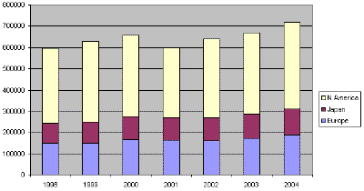 |
| Fig. 2a. Total iron and copper powder shipments in metric tons. (Source EPMA/MPIF/JPMA.) |
{kind=link}
| 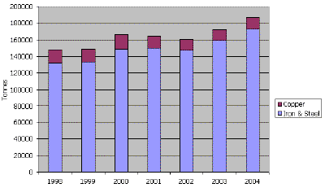 |
| Fig. 2b. European powder metal shipments for powder metallurgical applications in metric tons. (Source EPMA.) |
{kind=link}
Depending on the final product, initial powders have to satisfy different requirements. These include physical (size and particle-size distribution, state of the surface), chemical (basic metal and admixture content, chemically bound, adsorbed or dissolved gas contaminants), and technological properties (apparent density, flowability, stability, compressibility, corrosion resistance, etc.). At the same time, the physical, chemical, and technological properties of metal powders strongly depend on the method of powder fabrication. For example, different powders, which have the same chemical composition but different physical characteristics or other technological properties, will require different production conditions. On the other hand, the favored production method is determined also by economical aspects, that is, by the price of the powder, the price of the treatment alteration, the quantity of ingredients, and the possibility of obtaining the powder with all necessary physical, electrical, and magnetic characteristics.
Considering all these requirements, it is necessary to a have large number of different methods for the production of metal powders, including powders of alloys and compounds. Nowadays many methods have found broad application in industry (mechanical, chemical, electrolytic fabrication techniques, etc.), and some are found in the laboratory and the pilot-plant.
Considering all these requirements, it is necessary to a have large number of different methods for the production of metal powders, including powders of alloys and compounds. Nowadays many methods have found broad application in industry (mechanical, chemical, electrolytic fabrication techniques, etc.), and some are found in the laboratory and the pilot-plant.
From scientific and commercial aspects, there is an enormous interest in amorphous and nanocrystalline of powders. They are usually smaller than micrometer in size, and are used for production of sintering materials, and for other purposes such as magnetic memories or catalysts. Among the various processes many are chemical methods, such as: gas atomization, plasma spraying, centrifugal atomization, and vapor phase condensation. In contrast with mechanical fabrication techniques these processes enable not only the production of metal powders with controlled particle grain size, but with tailored properties of the powder that are of vital importance for its final application.
Almost any material can be made into powder, but the method selected for fabrication of the powder depends on specific material properties. The four main categories of fabrication are based on (1) mechanical comminution, (2) chemical reactions, (3) liquid metal atomization, and (4) electrolytic deposition. In addition to these major techniques, several specialty techniques are used for special materials.
- There are four fundamental mechanical comminution processes: impaction, attritioning, shearing, and compression. Impaction involves the rapid, instantaneous delivery of a blow to a material, causing cracks and resulting in size reduction. Attritioning is the reduction in particle size by a rubbing motion. Shearing forms a cleavage type fracture by cutting. Powders formed by shearing are coarse and not often found in powder metallurgy unless the material is extremely hard. Finally, compressive forces can break a material into a coarse powder if it is sufficiently brittle. Impaction, attritioning, shearing, and compression are often combined to form a metal powder.
- There are several variants of the chemical fabrication techniques: powders are formed by decomposition of a solid by gas, by thermal decomposition, by precipitation from a liquid, by precipitation from a gas, and by solid-solid reactive synthesis.
- Atomization involves the formation of powder from molten metal using a spray of droplets. It is attractive because of its applicability to several alloys and because of the ease of process control. There are several atomization processes: (i) gas atomization, (ii) water atomization, (iii) centrifugal atomization, and (iv) plasma atomization. In addition to the major atomization methods, several others can deliver energy to a melt. Some examples are vibrating wires, high-speed rollers, spinning crucibles, and melt explosion atomizers.
- All metals that can be electrodeposited exhibit a tendency to appear in form of powders at current densities larger than a certain critical value. A powder formed by the electrolytic technique is often dendritic or spongy in shape although considerable control of particle size and shape is possible. The specific properties of the powder depend on the electrolytic bath conditions during deposition and on the subsequent processing steps. Moreover, it should be noted that there is a possibility of electrodeposition of metal powders with controlled grain size, morphology, and crystal structure of the particles by using electrodeposition at periodically changing rate.
The electrolytic powder production method usually yields products of high purity, which can be well pressed and sintered. Besides, in recent years it has been shown that by different electrolysis regimes it is possible not only to obtain powders with a wide range of properties, but to predict the decisive characteristics of powders that are of vital importance for powder quality and for the final application.
The processes of metal deposition can be categorized into three main groups each of which has different requirements with respect to the physical state of the cathodic product.
- In electroplating the crystal layer is required to be fine grained, smooth, strongly adhesive, and glassy, that is, to be easily polished. It is obtained mainly from solutions of complex salts.
- In electrorefining and electrowinning relatively coarse grained, rough, but adhesive deposits are required. They have to be of high purity and firm enough to endure handling before melting and casting into shapes suitable for further processing. They are obtained from solutions of simple salts.
- In metal powder production by electrodeposition, a controlled product particle size is necessary and it is desirable that the product should not adhere, or adhere only weakly, to the cathode. Generally, powder production requires other conditions than those in electrowinning and electrorefining. Powders are obtained from qualitatively the same, but less concentrated, solutions as used in electrowinning and are produced at higher current densities.
Brief history
The very earliest uses of metal powders have been traced to several parts of the world. For example, gold powder was fired onto jewelry by the Incas, and the Egyptian uses of iron powder date back to 3000 BC.
During the 1800's, the use of powder metallurgy techniques began in earnest. Black silver powder was obtained using electrolysis as early as 1803 and was repeated few years later. Smee recognized, as early 1842, the main features of the dependence of crystallite size on current density and concentration and he described the conditions under which black metals are formed, whose dark color he correctly explained as being caused by the very small size of the deposited particles. The conditions of formation and the properties of electrolytic black silver powder were studied in detail already in the nineteenth century, and the growth of the highly dispersed deposits of silver and copper were followed under the microscope. In an extended study of the electrodeposition of copper, the current densities above which copper is deposited in powder form were determined in 1886.
Besides copper and silver, the nature and the causes of formation of zinc sponge have drawn the attention of various early investigators. One process by which iron powder (mainly for magnets) was manufactured around 1920 was described in details. Further older work on the formation of powders, flakes, etc., of various metals (lead-sponge, tungsten, platinum, etc.) is reported in a period up to 1925.
Before 1910, many papers dealt in detail with the formation of electrolytic metal powders and sponges; however, this problem was rarely considered for its own sake between 1910 and 1935. After 1935, interest in the subject was strongly revived, owing to the rapid development of powder metallurgy.
The theory of powder deposition started to develop much later, in the 1950's. Electrodeposition of metal powders evolved from an art to a science by the chapter of Ibl (1962) and especially by the book of Calusaru (1979). Calusaru reviewed all theoretical and practical knowledge up to 1979, and provided the basis for the scientific approach to the field. The essence of it is the conclusion that for electrochemical production of metal powders the corresponding electrochemical processes must be under diffusion control.
The properties of metal powders depend on the properties of the powder particles, which, in turn, depend on the conditions of electrodeposition. A methodology for modeling of powder particles, and hence properties of the powder, for electrodeposition at a periodically changing rate was introduced by Popov and Pavlovic (1993). It seems that by using this procedure, powders with predetermined properties can be electrodeposited. The development of this idea will probably be the future of electrochemical powder formation.
Electrolytic fabrication techniques
It is possible to successfully produce powders of about 60 metals by electrolysis. The majority of the metals are obtained by molten-salt electrolysis and powders of about 20 metals can be electrodeposited from aqueous solutions. However, while a larger number of metals can be obtained in powder form by molten-salt electrolysis, a much larger quantity of powders is produced by electrolysis from aqueous solutions. This is because the most important powders (copper, iron, and nickel) are obtained from aqueous solutions.
| 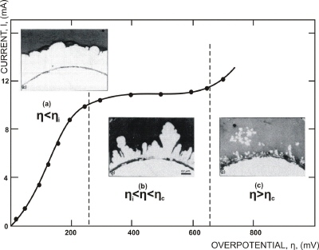 |
| Fig. 3. Polarization curve for the potentiostatic deposition of copper. (a) Overpotential; 200 mV, deposition time: 6 hours; (b) Overpotential: 300 mV, deposition time: 5 hours; (c) Overpotential: 700 mV, deposition time: 2 min. |
{kind=link}
- the process demands purification so that residual impurities could removed,
- the electrolysis technique is often very expensive,
- the process is usually limited to the production of pure metal (non-alloyed) powders.
Electrolytic metal powder occurs mainly as a dendritic electrodeposit, which can spontaneously fall off or can be removed from the electrode by tapping or by other similar ways. (Also, the powder has a tendency to form flakes or needles, fibrous or spongy forms, etc., depending on the electrodeposition process parameters and on the nature of the metal).
In Figure 3, the polarization curve for copper electrodeposition is shown, as well as cross sections of electrodeposits obtained in different overpotential ranges. Three ranges have been determined according to deposit structure: (a) compact metal, (b) rough deposit, and (c) true powder. These results show clearly that a distinction has to be made between rough and powdery deposits. Obviously, the powder deposit is formed only at the end of the polarization curve plateau, at overpotential/ current density values larger than the critical values, as illustrated by Figure 3.
| 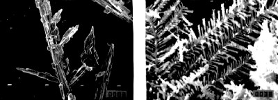 |
| Fig. 4. Disperse electrodeposits of silver obtained at constant overpotentials. (left) Overpotential: 100 mV, approximate magnification: 350. (right) Overpotential: 300 mV, approximate magnification: 5000. |
{kind=link}
| 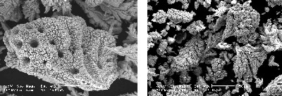 |
| Fig. 5. Metal powder particles obtained at a constant current density of 0.5 A/cm2. (left) Cobalt, approximate magnification: 520. (right) Nickel, approximate magnification: 400. |
{kind=link}
| 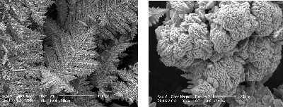 |
| Fig. 6. Morphology of nickel-cobalt alloy powder particles electrodeposited at a current density of 0.5 A/cm2. (left) Approximate magnification: 300. (right) Approximate magnification: 1000. |
{kind=link}
Electrolytic powder can also be obtained by electrodeposition at a periodically changing (pulsating) rate. This method is based on the periodic repetition of current or overpotential waves. Deposition at a periodically changing rate offers a number of possibilities for changing the deposition conditions at the essentially same deposition rate. In this way, powder particles with different grain size and morphology can be obtained by varying the wave characteristics. It seems in general, that the most pronounced effect can be achieved by the periodically changing regimes when the polarity of the current/voltage is reversed during the waves, resulting in an anodic dissolution of the deposit during parts of the wave. There are two effects of metal dissolution during anodic parts of current-overpotential waves on the morphology of metal powder particles. First, sharp points on electrode surface (characterized by low radii of curvature) dissolve faster than the dull points (characterized by large radii of curvature). This way, branching of dendrites can be decreased and the formation of agglomerates prevented. This makes powder particles less dendritic and more compact. This is illustrated in Figure 7, indicating the transformation of the shape of dendritic powder particles of lead due to the selective dissolution during the anodic current flow (compare the left and right pictures in Figure 7). Second, the metal adatoms on the surface, which are not in stable positions, dissolve easier than atoms from the crystal lattice, permitting formation of ideal crystal planes on the powder particles. This is illustrated by Figure 8. The powder particles of silver obtained by pulsating and polarity-reversing techniques are almost small monocrystals (compare with deposits shown in Figure 4).
| 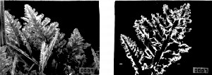 |
| Fig. 7. Lead deposits. (left) Constant current deposition at a current density of 10 mA/cm2; deposition time 65 seconds; approximate magnification: 750. (right) Pulsating deposition with current reversal; cathodic current density: 10 mA/cm2; cathodic deposition time: 6.5 seconds; anodic current density: 10 mA/cm2; anodic dissolution time: 0.5 seconds; approximate magnification: 750. |
{kind=link}
| 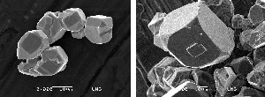 |
| Fig. 8. Silver powder particles. (left) Square-wave pulsating overpotential; overpotential amplitude: 300 mV; pulse duration: 50 milliseconds; pulse to pause ratio: 1:5; approximate magnification: 2000. (right) Deposition with reversing current; cathodic current density: 9 mA/cm2; cathodic deposition time: 10 milliseconds; anodic current density: 3 mA/cm2; anodic dissolution time: 10 milliseconds; approximate magnification: 1000. |
{kind=link}
Electrolysis conditions favoring diffusion control of electrodeposition enhance the formation of electrolytic metal powder. For example, decrease of metal salt concentration, increase of concentration of indifferent electrolyte, decrease of stirring rate, increase of current density, decrease of temperature, and increase of viscosity of solution are all factors favoring powder formation. Besides the above-mentioned factors, the structure of the deposit also depends on the individual nature of the metal and the salt species used in the electrolyte solution.
| 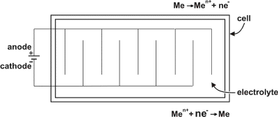 |
| Fig. 9. An electrolytic cell for the deposition of metal powder. |
{kind=link}
The process of electrolytic metal powder production consists of: powder electrolysis, washing and stabilizing, drying, classification (according to particle size), screening, blending, and packing. Typical properties of electrolytic powders, as influenced by the conditions of electrolysis, will be illustrated for electrolytic copper powder in the Appendix.
Powder characterization
When dealing with powders, the properties of both the individual particles and the collective (bulk) properties of the powder must be considered. The properties of single particles include size, shape, and microstructure, which can be determined by optical or scanning electron microscopic observations. For a bulk powder, characterization implies the determination of, at least, the following properties:
- Basic chemical composition (The minimum percentage of the base metal or percentages of main elements in case of metal alloy powders.)
- Impurities and minor constituents (The percentage of impurities.)
- Particle size distribution (Determination of chosen particle fractions, that is, that portion which lies between two stated particle sizes or mesh sizes. Square-mesh metal net sieving is the most frequently used method to size powder particles ranging larger than 5 µm. Very fine powders are measured through sedimentation in water or other appropriate liquids or with air ventilation or the vacuum air-jet microsieve.)
- Specific surface (Powder specific surface is obtained adding together its granule surfaces contained in a mass unit and generally is expressed in cm2/g. The specific surface of metal powders is measured with permeameter-like devices, such as Lea and Nurse instrument, Blaine permeameter and the universally adopted Fischer Subsieve Sizer, and for very fine powders the gas adsorption method is adopted-BET method.)
- Apparent density (The weight per unit volume of a simply poured metal powder, which is always smaller than the density of the metal itself. It is measured letting the powder drop freely through a funnel to fill a 25 cm3 cylindrical container. The ratio between mass and volume, that is, apparent density, is provided through leveling and weighing and is expressed in g/cm3. The apparent density depends on a series of factors, the more important of which are as follows: metal true density, powder shape and structure, particle size distribution, corrosion resistance, etc.)
- Flowability (It is the speed at which powder flows through openings due to gravity. To assess the speed, standardized funnels with varying calibrated openings are used. A certain amount of powder is poured in the funnel and the flow time is recorded.)
As mentioned above, the apparent density, the flowability, and the specific surface are the most important properties of metal powders, but in practice the quality of the powder is mostly determined by the apparent density. The dependence of the apparent density on conditions of electrolysis is illustrated for copper powder deposition by the following diagrams. All conditions were kept constant as shown below, with the exception of the value of the test variable. Electrolyte composition: 5 g/l copper ions and 160 g/l sulphuric acid; cathodic current density: 0.3 A/cm2; electrolyte flow rate: 0.17 l/min; time of powder removal (deposition time after which the powder is removed by brush or by tapping): 60 min; temperature: (50±2)oC or (122±4)oF.
| 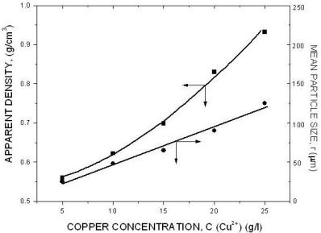 |
| Fig. 10. The effect of copper ion concentration. |
{kind=link}
| 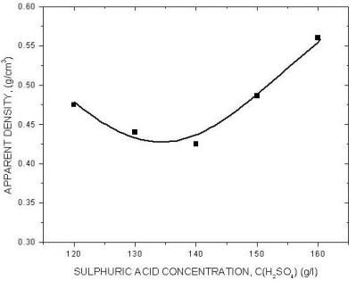 |
| Fig. 11. The effect of sulphuric acid concentration. |
{kind=link}
| 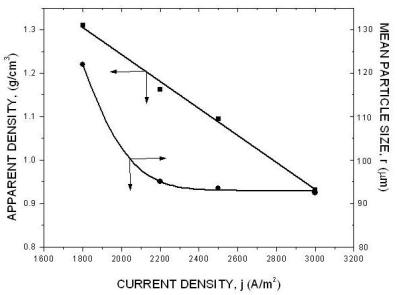 |
| Fig. 12. The effect of current density. |
{kind=link}
| 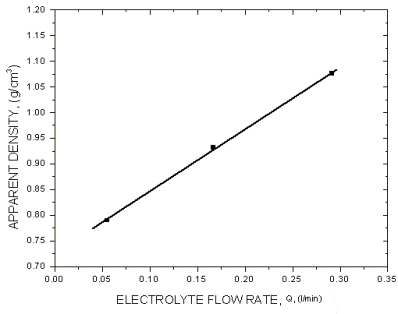 |
| Fig. 13. The effect of electrolyte flow rate. |
{kind=link}
| 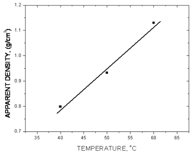 |
| Fig. 14. The effect of temperature. |
{kind=link}
| 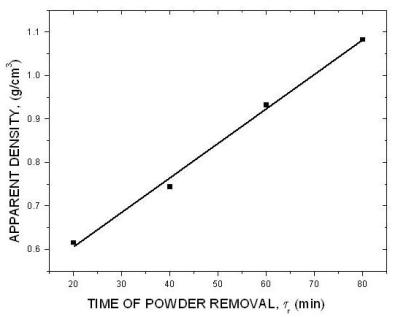 |
| Fig. 15. The effect of time of powder removal. |
{kind=link}
The above diagrams are in agreement with previous discussions of the effect of electrolysis conditions on the metal powder formation. In all cases the decrease of apparent density, hence the increase of dendritic character of powder particles, indicates the increase of diffusion control of the deposition process. It is necessary to note that the above diagrams are valid only for process parameters indicated. A very small change of deposition conditions can considerably change the properties of the powder.
| 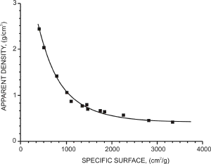 |
| Fig. 16. The apparent density of copper powder as a function of powder specific surface. |
{kind=link}
Obviously, the powder particles from the same fractions of different powders occupy approximately the same volume, but with considerably different structure of metallic copper. It means that the more dendritic is the structure of powder particles the smaller is the apparent density of copper powder.
It is possible to plot the dependence of apparent density on the specific surface copper powder as can be seen from Fig. 16. The larger is the specific surface the lower is the apparent density. This is also obvious from Fig. 17.
The flowability of a metal powder depends on the interparticle friction, which is dominated by the surface area and surface roughness of the particles. As the surface area and surface roughness increase, the amount of friction in the powder mass increases and the powder exhibits less efficient flow. The same appears with the shape of particle. The more irregular the particles shape is, the less efficient is the powder flow. Resistance to flow is the main feature of friction, which decreases as the particles approach a smooth spherical shape. The effect of particle size distribution on the powder flowability is also important. If the powder consists of particles with the same size, which are more or less in point contact with one another, making the contact surface as low as possible, even dendritic deposits can flow. If the powder consists of particles with different sizes, the interstitial voids of the larger particles can be filled by the smaller ones, the contact surface area increases, and the flow of the powder is less efficient. As a result of this, a non-sieved powder often does not flow, while the fractions of the same powder flow. Hence, the best conditions for the free flow of the powder are fulfilled if the powder consists of particles with the same size, with spherical shape, and with a surface structure approaching the structure of a smooth metal surface.
It can also be seen from Figures 17 and 18 that the surface structure of the particles determines the flowability of the powder. From Figures 17(left) and 18(left) is obvious that the interweaving of particles is not possible, hence the powder will flow. On the other hand, from Figure 17(right) and 18(right) can be seen that particles can interweave and the powder will not flow.
| 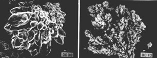 |
| Fig. 17. SEM photomicrographs of copper powder particles deposited at constant current density. Solution composition: 15 g/l copper ions and 140 g/l sulfuric acid; electrolyte flow rate: 0.11 l/min; temperature: (50±2)OC; fraction: 149-177 µm; approximate magnification: 500. (left) Current density: 0.18 A/cm2; time of powder removal: 1.5 hours; apparent density 1.122 g/cm3. (right) Current density: 0.36 A/cm2; time of powder removal: 15 min; apparent density: 0.524 g/cm3. |
{kind=link}
| 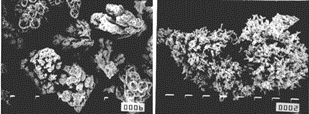 |
| Fig. 18. (left) The same as Fig. 17(left), but approximate magnification: 200. (right) The same as Fig. 17(right), but approximate magnification: 1500. |
{kind=link}
The electrolytic metal powder is not formed of particles of identical size and morphology; the individual particles may assume various form and sizes, while the powders as associations of such particles exhibit, more or less, the same characteristics if are deposited under the identical conditions. Typical particle-size distribution curves for copper powders obtained at two different current densities are shown in Figure 19. It is observed from Figures 12 and 19 that the particle-size of dominant fraction decreases with increasing current density, and that particle-size distribution curve is sharper.
The 149-177 µm fraction of powder obtained at 0.18 A/cm2, presented in Figures 17(left) and 18(left) exhibit excellent flowability while the non-sieved powder shown in Figure 19 does not flow. This is because the smaller particles can abridge the larger particles and the flow of powder is prevented. Hence, the surface structure of a non-sieved powder with good flowability must be more compact and smooth than the surface structure shown in Figures 17(left) and 18(left), such a powder is illustrated by Figure 20. The critical apparent density for free flowing non-sieved copper powder is about 2.2-2.3 g/cm3.
| 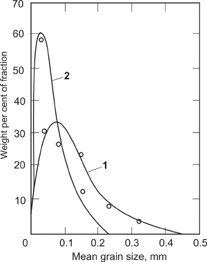 |
| Fig. 19. Particle size distribution of electrolytic copper powder deposited at a current density of 0.105 A/cm2 (curve 1) and 0.18 A/cm2 (curve 2). |
{kind=link}
| 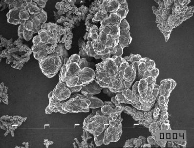 |
| Fig. 20. SEM photomicrographs of copper powder particles obtained by constant current deposition. Solution composition: 15 g/l copper ions and 140 g/l sulfuric acid; electrolyte flow rate: 0.11 l/min, temperature: (50±2)oC or (122±4)oF; non-sieved powder; current density: 0.16 A/cm2; time of powder removal: 2.5 hours; apparent density 2.3 g/cm3; flow time 38.4 seconds, approximate magnification: 200. |
{kind=link}
Other properties of bulk powders can also be correlated with the properties of powder particles in a similar way.
Acknowledgements
Related articles
Aluminum production
Current density distribution in electrochemical cells
Electroplating
Extracting metals from sulfide ores
Bibliography
- Powder Metallurgy Science (2nd edition), R. M. German, Metal Powder Industries Federation, Princeton, New Jersey, 1994.
- Electrodeposition of Metal Powders with Controlled Particle Grain Size and Morphology, K. I. Popov and M. G. Pavlovic, in Modern Aspects of Electrochemistry Vol. 24, pp 299-391, R. E. White, B. E. Conway and J. O'M. Bockris (editors), Plenum Press, New York, 1993.
- Electrodeposition of Metal Powders, A. Calusaru, Materials Science Monographs, Vol. 3, Elsevier, New York, 1979.
- The Formation of Powdered Metal Deposits, N. Ibl, in Advances in Electrochemistry and Electrochemical Engineering Vol. 2, pp 50-142, P. Delahay and C. W. Tobias (editors), Interscience, New York, 1962.
Other Resources
Listings of electrochemistry books, review chapters, proceedings volumes, and full text of some historical publications are also available in the Electrochemistry Science and Technology Information Resource (ESTIR). (http://knowledge.electrochem.org/estir/)